绘制形状
绘制图形不仅仅是利用线条来实现绘图, 还可以有快捷的绘制图形的办法
- 绘制矩形
- 绘制圆弧
绘制矩形
绘制矩形的方法
CanvasRenderingContext2D.strokeRectCanvasRenderingContext2D.fillRectCanvasRenderingContext2D.rect
注意: rect 方法就是矩形路径, 还需要使用 fill 或 stroke 才可以看到效果. 因此一般使用 strokeRect 或 fillRect 直接可以看到结果.
清除矩形区域
CanvasRenderingContext2D.clearRect
绘制矩形框
语法: CanvasRenderingContext2D.strokeRect( x, y, width. height )
描述:
- 用来绘制一个矩形. 比起直接使用
moveTo和lineTo方法要简单许多. - 该方法的前两个参数表示绘制矩形的左上角的坐标. 后两个参数表示这个矩形的宽高.
- 使用该方法不需要使用
moveTo方法设置起始点, 也不需要调用stroke等绘画方法. - 绘制的矩形支持
strokeStyle设置颜色样式.
案例
|
|
效果
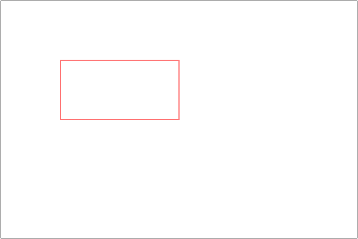
绘制填充矩形
语法: CanvasRenderingContext2D.fillRect( x, y, width. height )
描述:
- 用来绘制一个矩形. 比起直接使用
moveTo和lineTo方法要简单许多. - 该方法的前两个参数表示绘制矩形的左上角的坐标. 后两个参数表示这个矩形的宽高.
- 使用该方法不需要使用
moveTo方法设置起始点, 也不需要调用stroke等绘画方法. - 绘制的矩形支持
fillStyle设置颜色样式.
案例
|
|
效果
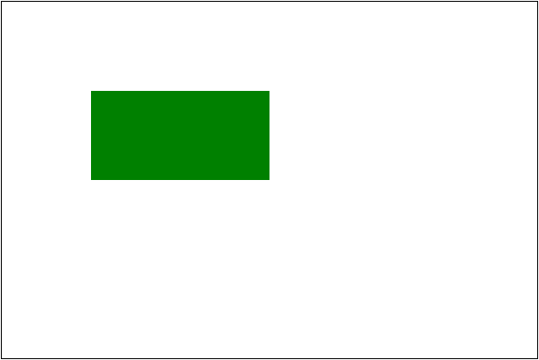
清除矩形区域
语法: CanvasRenderingContext2D.clearRect( x, y, width, height )
描述:
- 用于清除画布中的矩形区域的内容.
- 参数 x, y 表示矩形区域左上角的坐标, width 与 height 表示矩形区域的宽高.
案例
|
|
效果
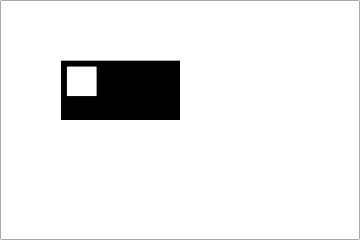
案例
利用绘制图形与清除矩形区域, 可以实现简单的动画. 例如代码:
|
|
简单效果
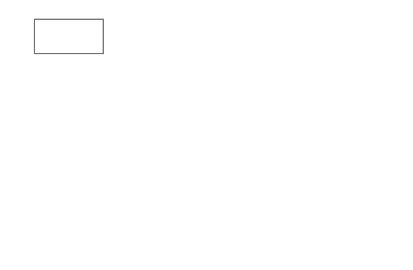
有时为了简单常常将整个画布都清除, 这样就不用每次计算清除的问题.
|
|
绘制圆弧
绘制圆弧的方法有
CanvasRenderingContext2D.arc()CanvasRenderingContext2D.arcTo()
绘制圆弧
语法: CanvasRenderingContext2D.arc( x, y, radius. startAngle. endAngle, anticlockwise )
描述:
- 该方法用于绘制一段弧, 配合开始点的位置 与
stroke方法或fill方法可以绘制扇形. - 方法中的前两个参数 x, y 表示绘制圆弧的圆心坐标.
- 参数 radius 表示圆弧半径, 单位为弧度.
- 参数 startAngle 与 endAngle 表示开始到结束的角度. 角度以水平向右为 0 弧度, 顺时针为正方向.
- 参数 anticlockwise 表示是否采用默认的正向角度, 如果传入 true 表示逆指针为正. 该参数可选.
案例
|
|
效果
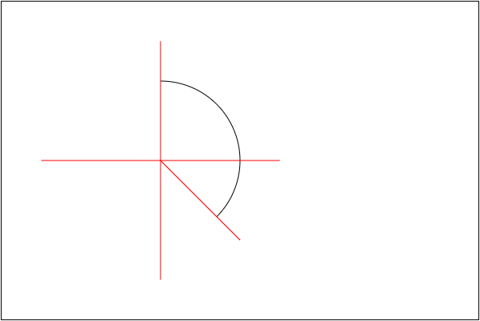
注意事项
- 使用 arc 绘图的时候, 如果没有设置
moveTo那么会从开始的绘弧的地方作为起始点. 如果设置了moveTo, 那么会连线该点与圆弧的起点. - 如果使用
stroke方法, 那么会从开始连线到圆弧的起始位置. 如果是fill方法, 会自动闭合路径填充.
例如
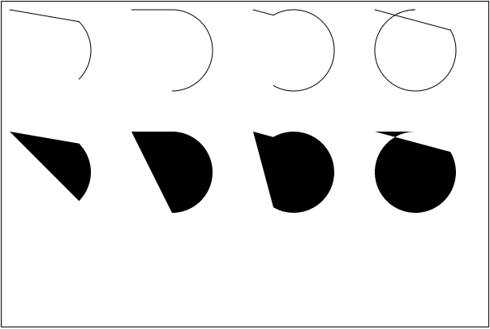
绘制扇形
绘制扇形的重点是需要设置起始位置为圆心点, 然后闭合路径即可
|
|
效果
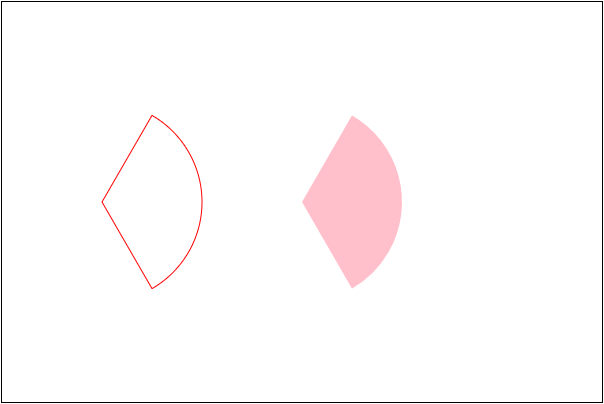
绘制扇形动画
绘制扇形动画, 就是每隔几毫秒( 20 毫秒)擦除以前绘制的内容, 然后在以前绘制的基础上比以前多绘制一点东西. 这里多绘制的内容就是由角度决定. 比如一开始角度从 -Math.PI / 2 开始绘制. 那么每次角度都 +0.1, 直到 绘制到 Math.PI * 3 / 2 为止.
|
|
效果
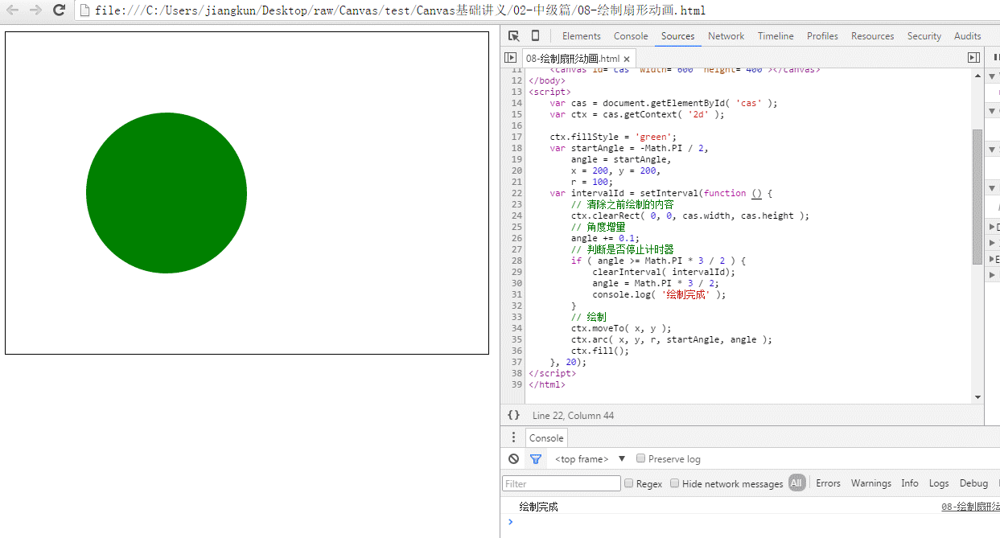
绘制饼形图
绘制饼形图最大的特点是角度是叠加的. 开始从 -Math.PI/2 开始绘制, 达到执行角 x 后, 下一个区域从 x 开始绘制, 然后有到一个角 y 停下来. 如此反复到 Math.PI * 3 / 2 结束.
本节看两个案例, 一个固定等分, 一个由数据源来定义角度.
三等分饼形图
绘制一个三等分的饼形图, 颜色使用 红, 绿, 蓝.
|
|
效果
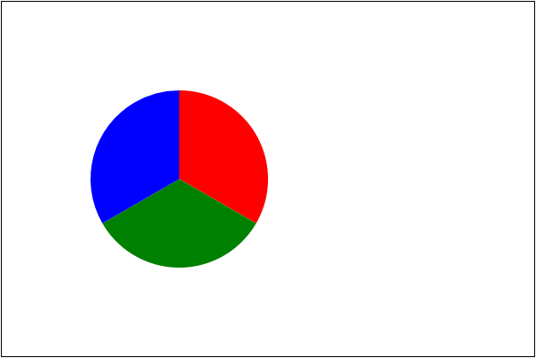
根据数据定义角度
根据数据源定义角度, 就是将所有的数据求和, 按照总和为 2 * Math.PI 的结论计算出每一个数据部分的弧度值. 同时颜色可以提前定义好.
从 Konva 库中分离出来的颜色
|
|
如果得到数据
|
|
那么计算各个部分的比例时, 可以构造一个存储分量值与弧度的对象数组.
|
|
最后根据数据开始绘图
|
|
效果
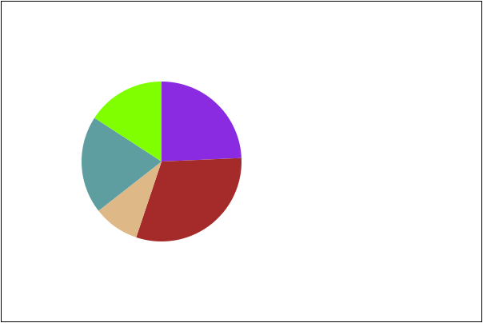
绘制相切弧
语法: CanvasRenderingContext2D.arcTo( x1, y1, x2, y2, radius )
描述:
- 该方法用于绘制圆弧
- 绘制的规则是当前位置与第一个参考点连线, 绘制的弧与该直线相切.
- 同时连接两个参考点, 圆弧根据半径与该连线相切
例如有一个起始点 ( 100, 100 ), 那么绘制其点. 颜色设置为红色.
|
|
然后两个参考点分别为 ( 100, 300 ) 和 ( 300, 300 ), 绘制出该点
|
|
连接两个参考点
|
|
得到效果为
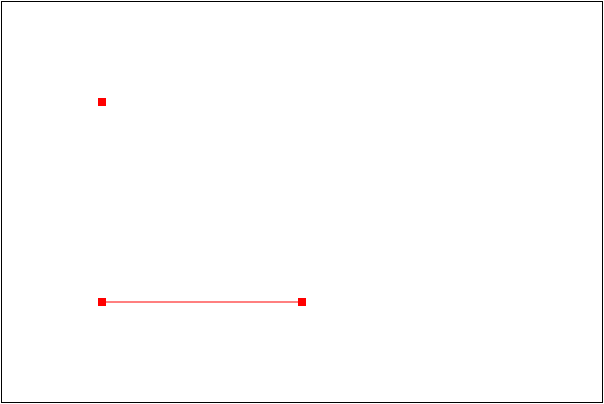
调用 arcTo 方法绘制圆弧. 记得将起始点设置为 ( 100, 100 )
|
|
得到效果
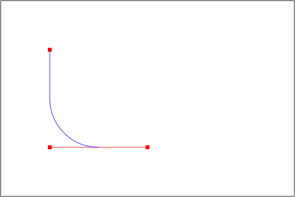
注意: 使用该方法可以使用圆弧连接两条直线, 而不用计算复杂的起始角度与结束角度. 因此用于绘制圆角矩形等案例较多.
绘制圆角矩形
封装一个函数, 用于绘制圆角矩形.
- 参考
rect方法, 需要坐标参数 x, y. - 由于设置圆角, 因此需要设置圆角半径 cornerRadius.
- 还需要提供宽高.
首先绘制一个矩形边框. 但是需要考虑圆角, 虽然从 x, y 开始绘制, 但是中间要空出 半径的距离.
|
|
效果为
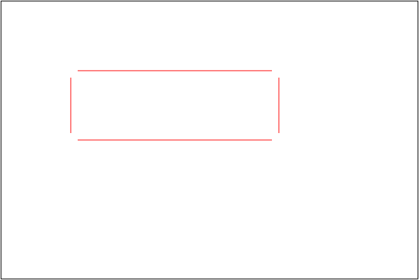
然后再分别绘制四个角, 设置当前位置与参考点的位置. 设置当前位置为一个线端点, 然后参考点依次就是 矩形顶点 和 另一个线段的端点.
|
|
即可得到
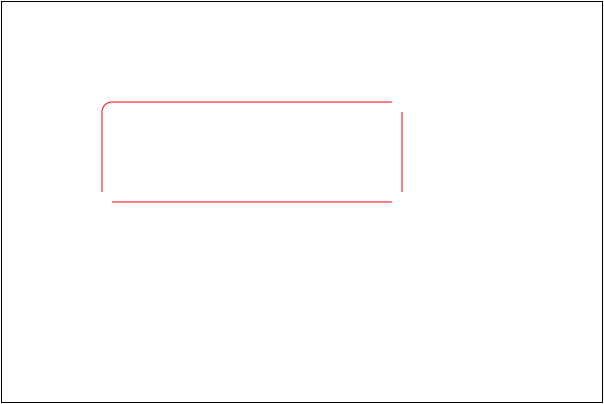
同理绘制另外三个圆角
|
|
即可得到
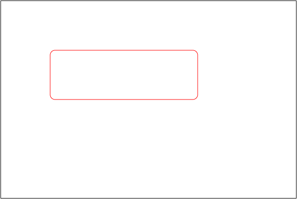
封装成方法就可以绘制更多圆角矩形了. 封装中注意 beginPath() 和 save() 和 restore()
|
|
调用代码
|
|
得到结果为
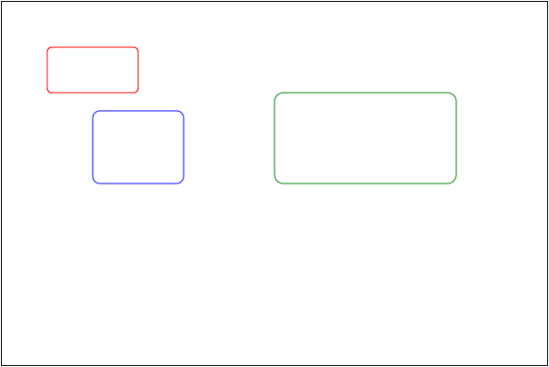
绘制文本
绘制文本的方法
CanvasRenderingContext2D.fillText()CanvasRenderingContext2D.strokeText()CanvasRenderingContext2D.measureText()
文本样式
CanvasRenderingContext2D.fontCanvasRenderingContext2D.textAlignCanvasRenderingContext2D.textBaseline
绘制文字
语法:
CanvasRenderingContext2D.strokeText( text, x, y[, maxWidth] )CanvasRenderingContext2D.fillText( text, x, y[, maxWidth] )
描述:
- 这两个方法的功能都是在给定的 x, y 坐标下绘制文本内容.
- stroke 绘制描边文字, 文字内空心. fill 绘制填充文字, 即实心文字.
- 最后一个参数可选, 用于限制文字的总宽. 特殊条件下, 系统会自动调整文字宽度与大小以适应该参数限制.
案例
|
|
效果
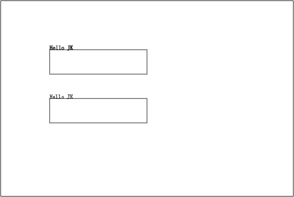
注意: 第一个文字由于中间空心, 所以文字相当于双线显示. 就显得较粗.
根据绘制的矩形块可以发现文字几乎使用该点作为文字基线参考.
计算文本尺寸
语法: CanvasRenderingContext2D.measureText()
描述:
- 该方法返回一个文本尺寸对象, TextMetrics 对象.
- TextMetrics 对象属性很多, 常用的 width 属性可以获取文字的宽度.
设置文字属性
设置文字字体
语法: CanvasRenderingContext2D.font = value
描述:
- 该属性用于设置绘制字体的各种信息, 与 CSS 语法一致, 设置字体形状, 样式, 字号粗细等.
- 其顺序可以是: style | variant | weight | size/line-height | family.
- 默认值为 10px sans-serif
修改字号后查看 strokeText 与 fillText 的区别
|
|
效果
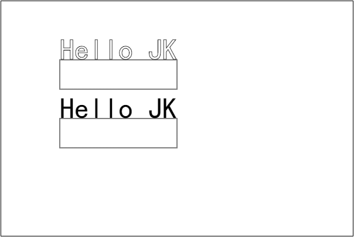
设置字体水平对齐方式
语法: CanvasRenderingContext2D.textAlign = value
描述:
- 该属性用于设置文字的水平对齐方式. 设置文字居中, 靠左右对齐等.
- 该属性可以设置的值有: start( 默认 ), end, left, right, center.
start 表示根据参考基准点的垂直直线左靠对齐
|
|
效果
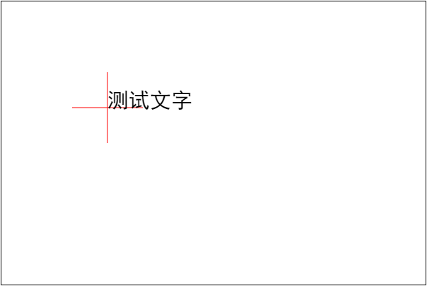
end 表示根据参考基准点的垂直直线右靠对齐
|
|
效果
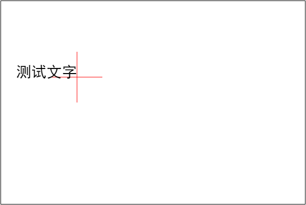
left 与 right 就是左对齐与右对齐的意思
|
|
效果
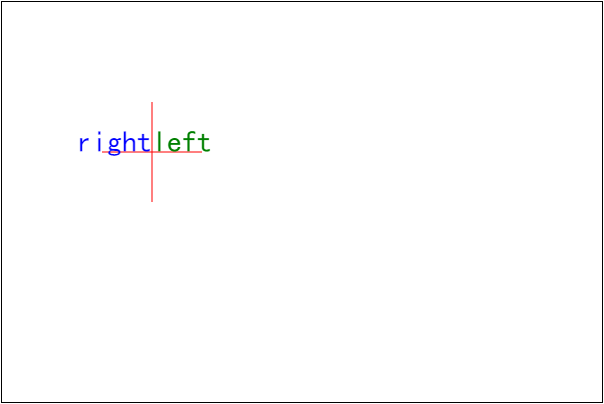
最后 center 就是居中的含义.
|
|
效果
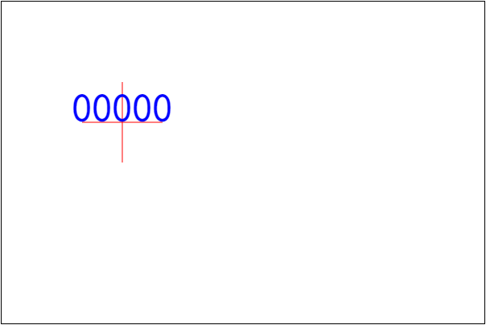
设置字体垂直对齐方式
语法: CanvasRenderingContext2D.textBaseline = value
描述:
- 该方法设置文字在垂直方向上的对齐方式.
- 该属性可以取值: top, middle, bottom, hanging, alphabetic, ideographic
- 基于参考点的直线, 其中 top, middle, buttom 分别表示靠上, 居中, 靠下对齐.
- alphabetic 表示字母基线, 类似于英文字母的对齐方式. 例如 a, g, f 等字母.
- ideographic 表意对齐. 使用字母对齐中超出的字母为参考. 即比字母基线略靠下.
- 所有的对齐方式是根据文字特点相关的. 对于中文主要使用的还是 top, bottom 和 middle.
top, middle, bottom 使用的较多
|
|
效果
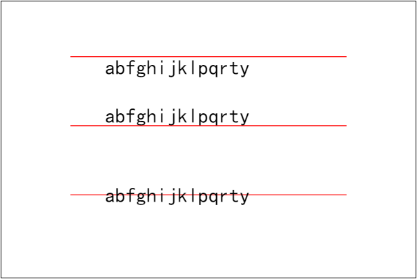
alphabetic 表示字母参考线, ideographic 会比它低一点, hanging 表示悬挂.
|
|
效果
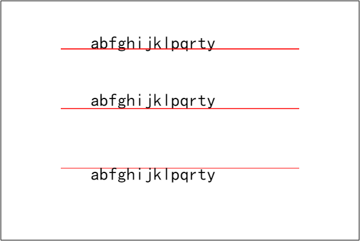
实际上大多数参考方式只有在特定语言中有作用, 而且与字体也有相对复杂的关系. 例如( 下图是有部分错误的 ):

绘制图片
绘制图像虽然只有一个 drawImage 函数, 但是该函数有多重参数形式.
CanvasRenderingContext2D.drawImage( img, dx, dy ).CanvasRenderingContext2D.drawImage( img, dx, dy, dWidth, dHeight ).CanvasRenderingContext2D.drawImage( img, sx, sy, sWidth, sHeight, dx, dy, dWidth, dHeight ).
绘制简单图像
语法: CanvasRenderingContext2D.drawImage( img, dx, dy )
描述:
- 使用三个参数, 允许在画布上的 任意位置 绘制图片.
- 参数 img 是指图片对象. 可以是 img 标签, 或者是 video 标签, 已经另一个 canvas 等.
- 需要注意的是如果直接添加 img 对象是不可以的, 需要等待其加载.
准备一张网络图片, 绘制, 便于查看其加载过程.
|
|
此时没有任何结果, 打开调试工具查看 Net Work
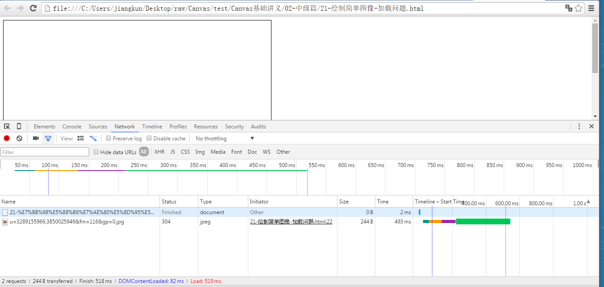
因为加载图片需要时间, 因此将绘制的方法放在 onload 事件中.
|
|
修改后就可得到效果
注意: 这里使用 new Image() 与 document.createElement( 'img' ) 是一样的.
在指定区域内绘制图像
当图片比较大的时候, 如果使用这样的方式绘图, 那么图片可能会完全覆盖画布. 例如:
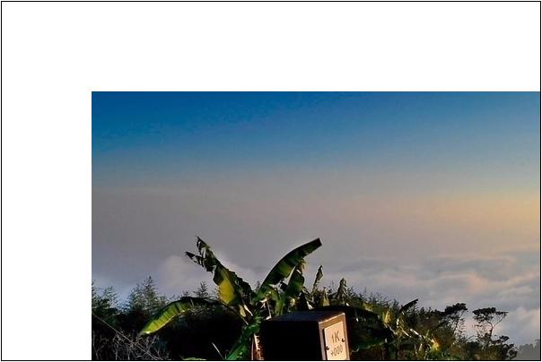
因此, 需要将其控制在一个矩形区域内绘制.
语法: CanvasRenderingContext2D.drawImage( img, dx, dy, dWidth, dHeight )
描述:
- 参数 dWidth, dHeight 表示绘制的矩形区域. 绘制的 dx, dy 坐标决定了开始.
- 该方法绘制的图像会在指定范围内被压缩显示.
将上面的图绘制在 100 * 100 的范围内.
|
|
效果
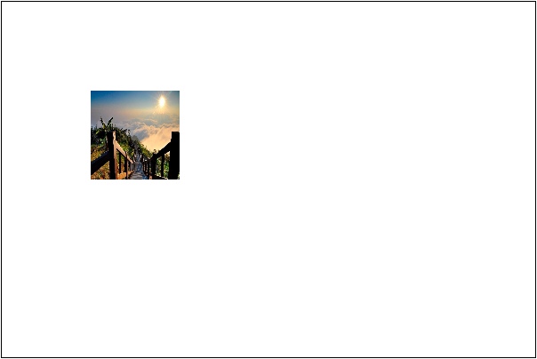
如果希望正常显示, 需要固定一个宽度或者高度, 然后根据比例计算出另一个值. 这里假定高度是 100. 计算宽度后绘图.
|
|
效果
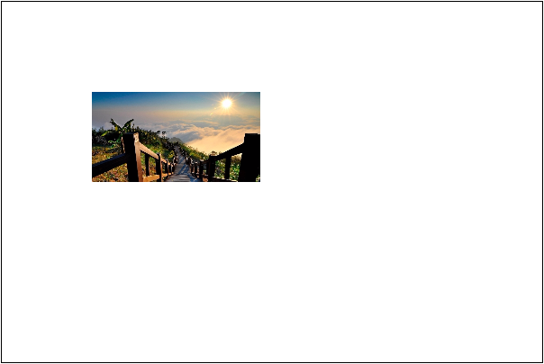
绘制任意图像
类似于 CSS 中处理按钮等小图标的技巧, 将很多的效果图集中在一张 png 格式的背景透明的图片中, 这样可以提高效率也便于维护. 那么 drawImage 同样支持该方式绘图. 在画布中的指定位子与指定区域内, 绘制图片中的某个矩形区.
语法: CanvasRenderingContext2D.drawImage( img, sx, sy, sWidth, sHeight, dx, dy, dWidth, dHeight )
描述: 这里的带有 s 前缀的参数就是指图源的矩形区域.
例如将图片的 ( 100, 100, 300, 200 ) 处的内容绘制到页面的 ( 100, 100, 300, 200 ) 的位置.
|
|
效果
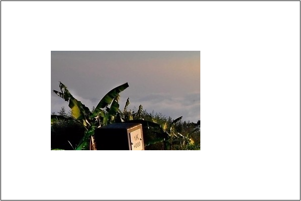
绘制动画
有了图片部分绘制的功能, 我们就可以尝试绘制动画了. 准备一张图片
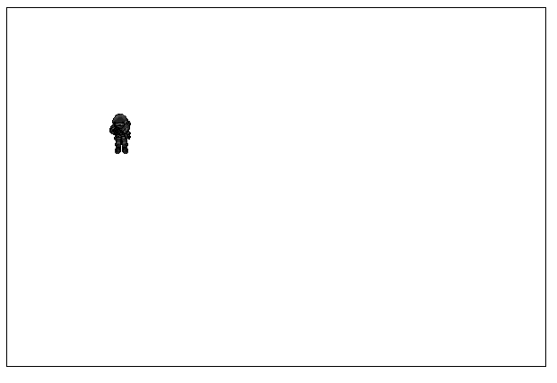
然后开始的时候绘制第一行的第一张图. 计算它的坐标与宽高
|
|
那么第一行的第二张图就是 ( 0, width, width, height ), 第三张就是 ( 0, width * 2, width, height ). 因此第一行的第 i 张图就是
|
|
同理得到, 第 j 列的 x 坐标是 height * ( j - 1 )
现在绘制第一张图
|
|
效果
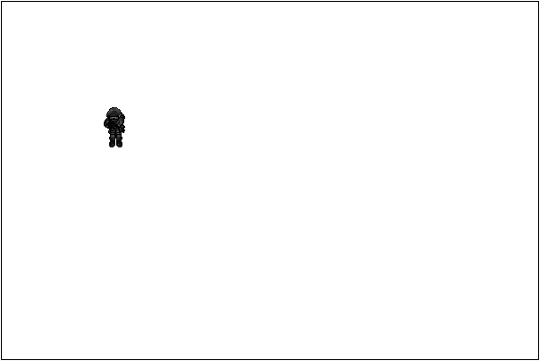;
现在要求, 每隔 200 毫秒就切换一张图片, 现在只考虑第一行的图片.
|
|
效果
那么扩展一下, 把四行都画出来